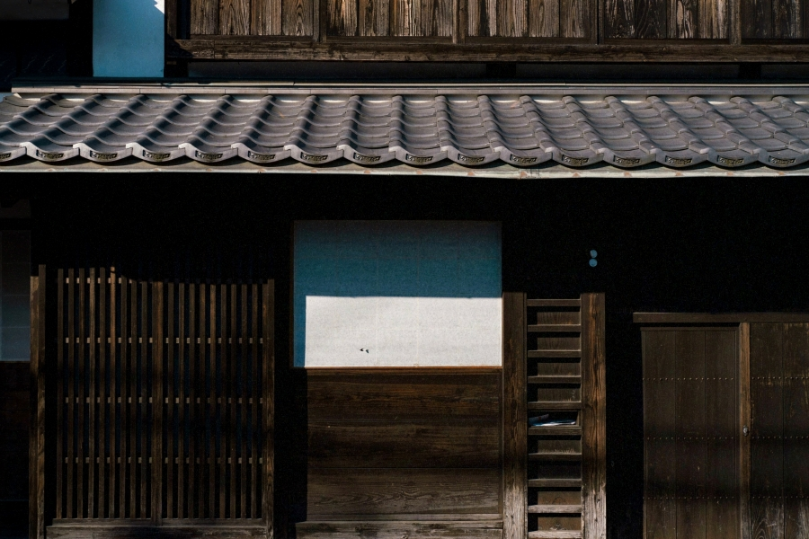

古民家再生
佐渡の山間に建つ築80年の立派な古民家。古き良き趣はそのままに、耐震性能や温熱性能を住みやすく向上させました。

今回リノベーションする物件は、佐渡の山間に建つ築80年の立派な古民家です。元は農業を営んでいた方が所有していて、古民家と呼ぶに相応しい伝統的な木組の家です。いずれは田舎で暮らすのが夢だったという、今の住まい手。家の購入を考えていたところ、母方の里だった佐渡にちょうど空家がでたので、一念発起して購入されたそうです。古民家と聞いて魅力的に感じる方も多いかもしれません。ですが実際は長年空き家として放置されていることが多く、リフォームやリノベーションをしなければ、まともに住むことができない物件が多いです。その物件によって状態もまちまちのため、まずはじっくりその物件を、実調するところから始まります。再生可能な古民家か？住まい手の想いを実現できるか？木材に腐朽や蟻害（シロアリ被害）がないか？などといった視点でじっくりと確認し判断します。今回の古民家は、昭和の家とは思えないくらい柱や梁も立派で丈夫な建物だったので、住まい手のご希望の通り、古き良き趣を残したままリノベーションすることとしました。ただし、内部は座敷の続きの部屋で、暗く寒い状態だったので、耐震性能と温熱性能の両方を向上させる設計としました。
大きな間取りはそのままに、来客のための土間スペースを玄関近くに設け、水回りも現在の暮らしに合わせて修繕しました。また、四方を山に囲まれた景色の良いところなので、すべての部屋から山が見えるように窓を開けました。耐震性能と温熱性能の両方を向上させ、古民家と言えども、地震に強くあたたかい家をつくることができました。改修前は、外気と室内の温度が変わらぬほど、寒い家でしたが、改修後はとても暖かく暮らしやすいと嬉しいお言葉をいただいております。念願だった田舎暮らしも、敷地内の場所で野菜を育てたり、地域の活動に参加したりと充実した時間を過ごしておられるそうです。